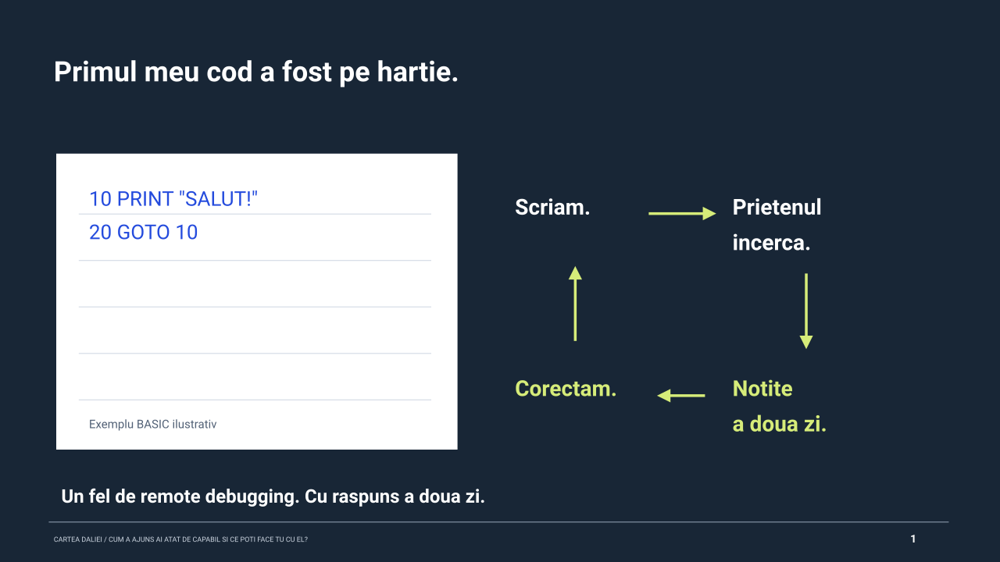

Cum a ajuns AI atat de capabil si ce poti face tu cu el?

1 / 14
Sagetile stanga / dreapta schimba slide-ul. Home / End merg la primul / ultimul. Linkul pastreaza slide-ul curent.
Citeste textul slide-ului
Se incarca textul...
Note de prezentare
Se incarca notele...